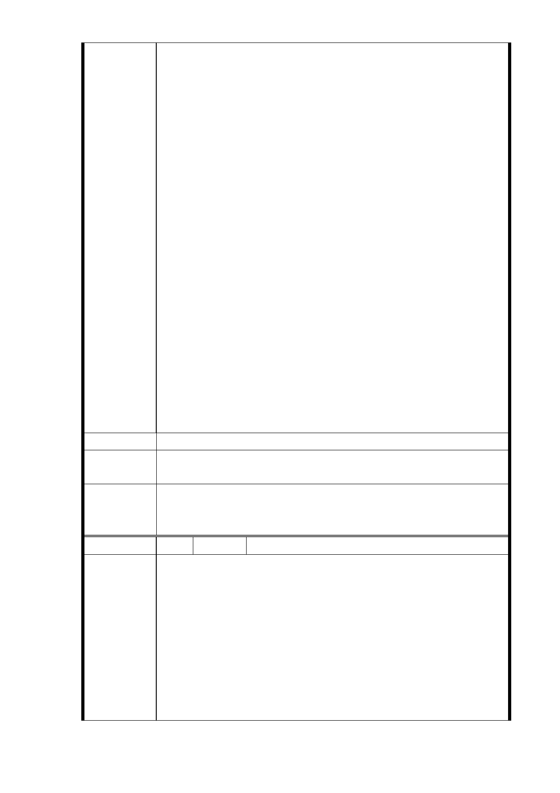

運局」代表：「如果沒有變得更好，那人家為何要加入（聯
開案）？」故對於本案--即「捷運聯開併同都更案」之實施，
自應遵照郝市長所認同之理念「先談好住戶權益之保障」後，
始能進行。
四、茲因本地號土地既已被納入本「聯開案」範圍（未來地
上 15 層，地下 3 層建物），並於「都委會」之程序審理中。
陳情人等迫於無奈，乃同意「捷運局」於上述來函「說明六」
中所稱「…尚請協助提供全部地主具名及簽章之聲明書予本
局，本局將併臺端最新主張以「專案」方式…提供本市都市
計畫委員會審議參考」之作為。
不論「都委會」最終之審議結果為何，「捷運局」既身為相
關捷運權益分配之「權責」機關，更當呼應郝市長之具體主
張，就 351 地號土地、建物之「特殊性」、「獨特性」以「專
案」方式辦理，確保陳情人等之基本權益不受損害。
最後，陳情人等再次提出「聲明」:
本 351 地號土地既已被強行納入捷運「聯開案」範圍，基於
憲法對「人民財產」及「自由居住」權之保障，則視為主管
機關同意就本地號土地、建物之「特殊性」及「獨特性」，
以「專案」方式辦理捷運之「權益分配」事宜，住戶除分得
既有樓層外（頂樓分得頂樓），並獲得以下基本權益之保障：
1、1 坪換 l.3 坪（室內）面積
2、地下室停車位一個
建議辦法
市府回應
意見
同編號 7、9、9-1 研析意見。
一、R04 站南側捷二用地，維持公展範圍（基地面積 3,328
委員會決議
㎡），並辦理土地開發。
二、同「市府回應意見」。
編 號 9-4 陳情人 把明貽（R04 捷二）
主旨：
強烈反對「台北市政府」、「台北市都市計畫委員會」於未
能徵得北市信義區永春段三小段 351 地號住戶同意且未能提
出具體權益保障措施前，逕將本地號土地「非必要性」納入
「信義捷運線東延段 R04 車站南側基地聯合開發案」，並擬
陳 情 理 由 實施「變更住宅區為土地開發區暨劃定都市更新地區」計畫，
損害住戶權益至鉅。
故強烈要求「台北市政府」、「台北市都市計劃委員會」若
未能事先提出保障住戶權益之具體作為，則應將本地號土地
自該「聯合開發案」範圍排除，否則即視為同意本地號住戶
所提出之訴求主張。
- 39 -